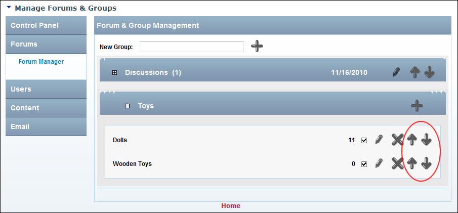

Re-ordering Forums
How to modify the order of forums within a forum group using the Forum module.
- Go to the Forum Administration page. See "Navigating to the Forum Admin Page"
- In the left-hand panel, select Forums > Forum Manager. This displays the Forum and Group Management window.
- Maximize
 the Forum Group associated with the forum to be edited.
the Forum Group associated with the forum to be edited.
- Click the Move Up or Move Down buttons beside a forum to move it up or down one position respectively.
- Repeat Steps 3-4 to re-order forums within another forum group.

Reordering Forums